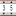

SDS Initializer
A widget initializer sets some global properties for a new widget. The initializer can be set in the preferences: Menu 'CSS' -> 'Preferences' -> 'CSS Applications' -> 'Display' -> 'Default schema'.
All widgets
Alias The alias name of the widget is set to '$channel$'.
Connection state The connection states are indicated by the background color:
initialize
connected
connection lost
Alarm status The alarm status of a process variable is indicated by the widget border:
No Alarm - no border
Alarm
Warning
 Action Button:
Action Button:
Action Data (Dynamic): Input- and Output channel is set to alias $channel$.
Label text (Dynamic): Input channel is set to alias $channel$ and strings
for connection states 'initialize' and 'connection lost' are set.
(Because Action Button has no border the alarm status is not visible with the default settings!)
 Advanced Slider:
Advanced Slider:
Slider Value (Dynamic): Input- and Output channel is set to alias $channel$.
Max (Dynamic): Input- channel is set to alias characteristic $channel$[graphMax].
Min (Dynamic): Input- channel is set to alias characteristic $channel$[graphMin].
 Arc:
Arc:
(Because the background of Arc is disabled the connection states are not visible.)
 Bargraph:
Bargraph:
Level HI (Dynamic): Input- channel is set to alias characteristic $channel$[warningMax].
Level HIHI (Dynamic): Input- channel is set to alias characteristic $channel$[alarmMax].
Level LO (Dynamic): Input- channel is set to alias characteristic $channel$[warningMin].
Level LOLO (Dynamic): Input- channel is set to alias characteristic $channel$[alarmMin].
Maximum (Dynamic): Input- channel is set to alias characteristic $channel$[graphMax].
Minimum (Dynamic): Input- channel is set to alias characteristic $channel$[graphMin].
Value (Dynamic): Input- channel is set to alias $channel$.
Color Fillbackground (Dynamic): Input- channel is set to alias $channel$ and connection states to the default status colors.
Transparent background (Dynamic): Input- channel is set to alias $channel$ and connection state to true otherwise false.
Fill color (Dynamic): Input- channel is set to characteristic alias $channel$[severity]
with the rule for default alarm colors.
Foreground color (Dynamic): Input- channel is set to alias $channel$ and connection states to the default status colors.
 Ellipse:
Ellipse:
Value (Dynamic): Input channel is set to alias $channel$ and value
for connection states 'initialize' and 'connection lost' are set to 0.
 Label:
Label:
Transparent (Static): Set to 'false'.
Label text (Static): Set string 'Label'.
Label text (Dynamic): Input channel is set to alias $channel$ and strings
for connection states 'initialize' and 'connection lost' are set.
 Menu Button:
Menu Button:
Action Data (Dynamic): Input- and Output channel is set to alias $channel$[enumDescriptions] and $channel$.
Label text (Dynamic): Input channel is set to alias $channel$ and strings
for connection states 'initialize' and 'connection lost' are set.
 Meter:
Meter:
Boundary HI (Dynamic): Input- channel is set to alias characteristic $channel$[warningMax].
Boundary HIHI (Dynamic): Input- channel is set to alias characteristic $channel$[alarmMax].
Boundary LO (Dynamic): Input- channel is set to alias characteristic $channel$[warningMin].
Boundary LOLO (Dynamic): Input- channel is set to alias characteristic $channel$[alarmMin].
Maximum Value (Dynamic): Input- channel is set to alias characteristic $channel$[graphMax].
Minimum Value (Dynamic): Input- channel is set to alias characteristic $channel$[graphMin].
Value (Dynamic): Input- channel is set to alias $channel$.
 Polygon:
Polygon:
(Because the background of an Ellipse is disabled the default connection states are not visible.)
 Polyline:
Polyline:
(Because the background of an Ellipse is disabled the default connection states are not visible.)
 Rectangle:
Rectangle:
Value (Dynamic): Input channel is set to alias $channel$ and value
for connection states 'initialize' and 'connection lost' are set to 0.
 Simple Slider:
Simple Slider:
Max (Dynamic): Input- channel is set to alias characteristic $channel$[graphMax].
Min (Dynamic): Input- channel is set to alias characteristic $channel$[graphMin].
Slider Value (Dynamic): Input- and Output channel is set to alias $channel$.
 Sixteen Binary Bar:
Sixteen Binary Bar:
Value (Dynamic): Input- channel is set to alias $channel$.
Internal Frame Color (Dynamic): Input- channel is set to alias $channel$ and connection states to the default status colors.
 Strip Chart:
Strip Chart:
Value #1 (Dynamic): Input- channel is set to alias $channel$.
Maximum (Dynamic): Input- channel is set to alias characteristic $channel$[graphMax].
Minimum (Dynamic): Input- channel is set to alias characteristic $channel$[graphMin].
 Switch:
Switch:
Switch State (Dynamic): Input- channel is set to alias $channel$.
(Alarm status is not set for the Switch.)
 Text Input:
Text Input:
Input Text (Static): Set string to 'Enter Text'.
Input Text (Dynamic): Input- and Output channel is set to alias $channel$.
Transparent (Static): Set to 'false'.
 Thumb Wheel:
Internal frame thickness (Static): Set frame thickness to 1.
Value (Dynamic): Input- and Output channel is set to alias $channel$.
Internal Frame Color (Dynamic): Input- channel is set to alias $channel$ and connection states to the default status colors.
Waveform:
Data #1 (Dynamic): Input- channel is set to alias $channel$.
Automatic scaling (Static): Set to 'false'.
Maximum (Dynamic): Input- channel is set to alias characteristic $channel$[graphMax].
Minimum (Dynamic): Input- channel is set to alias characteristic $channel$[graphMin].
(Alarm status is not set for the Waveform.)